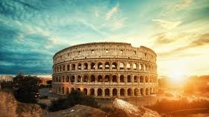
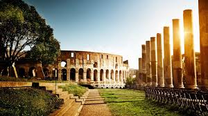
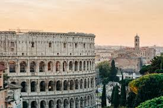
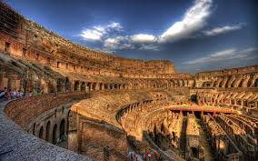

Rome 🏛️
Rome, the Eternal City, is home to iconic landmarks including the Colosseum, the Roman Forum, and the Pantheon. It served as the heart of the Roman Empire and remains a center of culture, history, and architecture.
"Rome stands as a timeless monument to the power, culture, and architectural genius of the Roman civilization."
Gallery 🏛️




